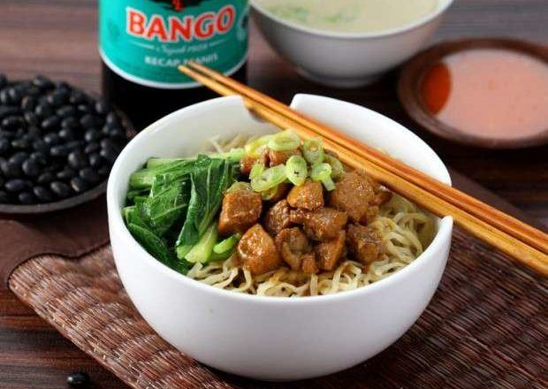

Resep Mie Ayam
Bahan
- 3 sdm minyak, untuk menumis
- 1 ekor ayam, cincang dagingnya, sisihkan tulang ayam
- 20 g bawang merah, haluskan
- 20 g bawang putih, haluskan
- 1 batang daun bawang, iris
- 2 batang serai, memarkan
- 2 lembar serai
- 3 Bango Kecap Manis
- 1 Royco Kaldu Ayam
- ½ sdt merica putih bubuk
- 400 g mi telur segar
Kaldu
- 2 L air
- 1 buah bawang bombay, potong kasar
- 1 batang daun bawang
- 1 batang seledri
- 1 sdt garam
- 1 Royco Kaldu Ayam
- ½ sdt merica putih bubuk
Sambal Rawit
- 30 g cabai rawit merah
- 1 sdm cuka
- 3 sdm air matang
Cara Membuat
- Kaldu: Rebus tulang ayam, bawang bombay, daun bawang, dan seledri hingga mendidih. Masukkan sisa semua bahan, aduk. Masak di atas api kecil selama 30 menit. Sisihkan. Angkat.
- Sambal: Rebus cabai hingga matang. Angkat. Haluskan. Aduk rata bersama cuka dan air. Sisihkan.
- Tumis ayam kecap: Panaskan minyak goreng, tumis bawang merah dan bawang putih hingga harum. Masukkan irisan daun bawang, aduk.
- Masukkan serai dan daun salam, aduk. Masukkan daging ayam cincang, tumis hingga berubah warna dan daging kaku.
- Masukkan Bango Kecap Manis, Royco Kaldu Ayam, dan merica. aduk rata.
- Masak hingga matang. Angkat. Sisihkan.
- Mie ayam kecap: Siapkan mangkuk. Rebus mie dalam air mendidih hingga matang. Angkat. Masukkan mie ke dalam mangkuk. Sendokkan tumis ayam kecap ke atasnya. Sajikan bersama kuah dan sambal rawit.